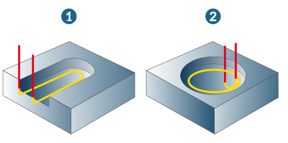

Macros
Define the tool approach at the start point and the tool retraction from the end point of the contour. This behavior can be defined manually or calculated automatically by hyperMILL.
Macro mode
Automatic: By default, a collision-free, tangential macro (1) is attempted. Macro length and Side distance can be defined. If this is not possible, a collision-free, circular macro (2) is attempted.
|  |
If the macro movement in Automatic mode contains a Z component, hyperMILL will attempt to allow collision-free approach and retract movements in the path compensation, depending on the tool diameter. If this is not possible, the following warning message appears:
Manual: Several options are available for the approach and retract movements.
Perpendicular (1): Perpendicular to contour tangent, enter length.
Tangential (2): On contour tangent, enter length.
Quarter circle (3), Half circle (4): In quarter or half circle, enter radius.
 |
Macro extension: Only available for quarter circle. The macro is extended by the specified value. This guarantees that the tool can fully retract from the groove without leaving behind any material (such as chippings/shavings).This is particularly important for Bottom to top milling (see Parameters section).
Contour extension (open contours only)
Click Start to extend the contour (of the toolpath) by the specified amount for the approach movement.
Click End to extend the contour (of the toolpath) by the specified amount for the retract movement.
Macro position
Left / Right: The macro movement takes place to the left or right of the tool, from the perspective of the contour. Only available in manual macro mode.
For the Auto climb tool position, the Left and Right parameters are not available.
For the On contour tool position, either Left or Right can be defined as the macro position.
For the Left tool position, the Left macro position is activated as standard (and cannot be changed).
For the Right tool position, the Right macro position is activated as standard (and cannot be changed).
Feedrate macros
The feedrate may be defined for both Approach and Retract.